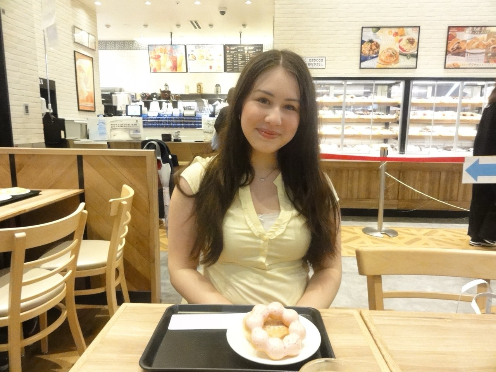
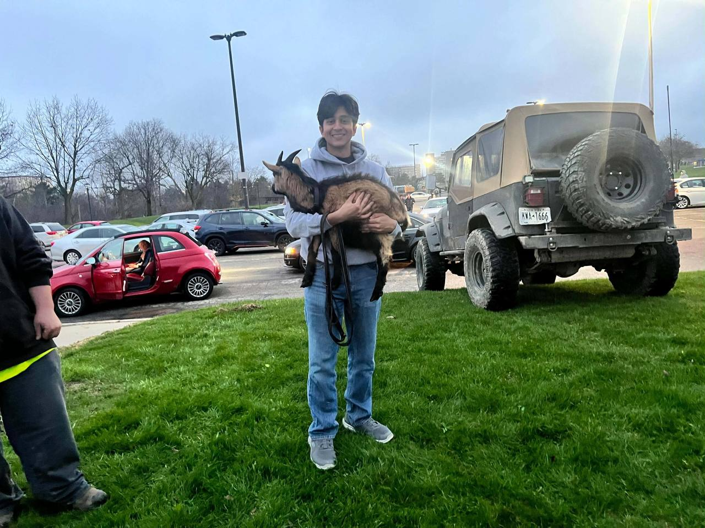
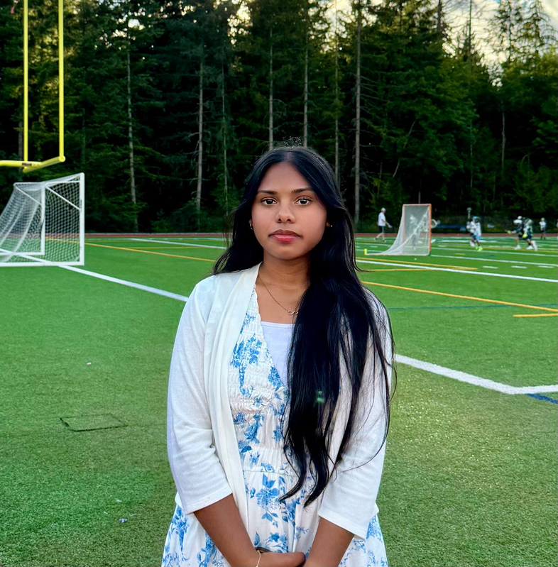
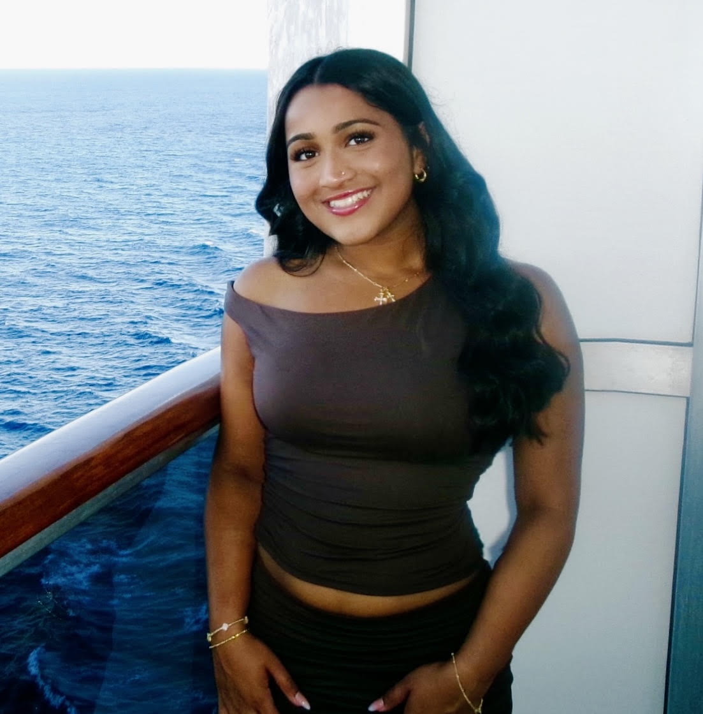
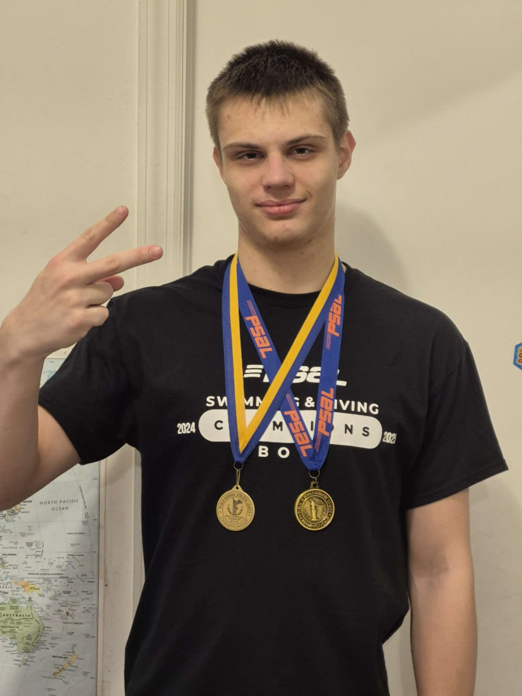
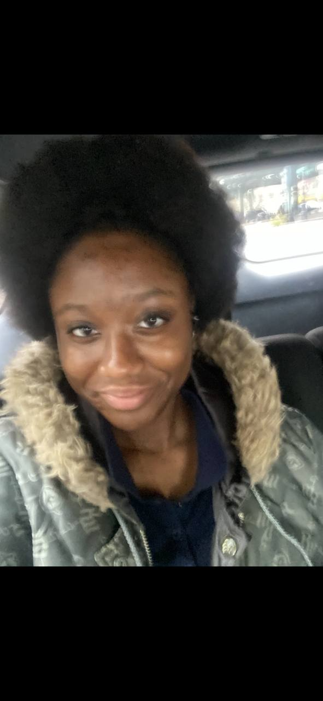
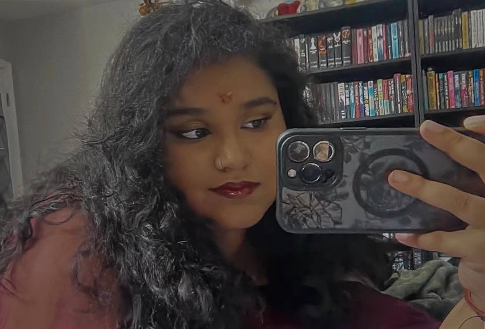
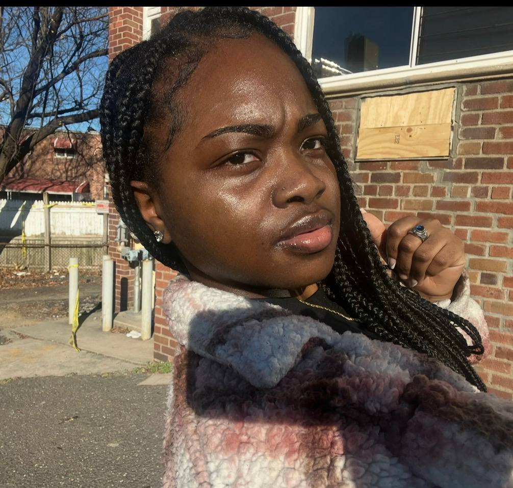
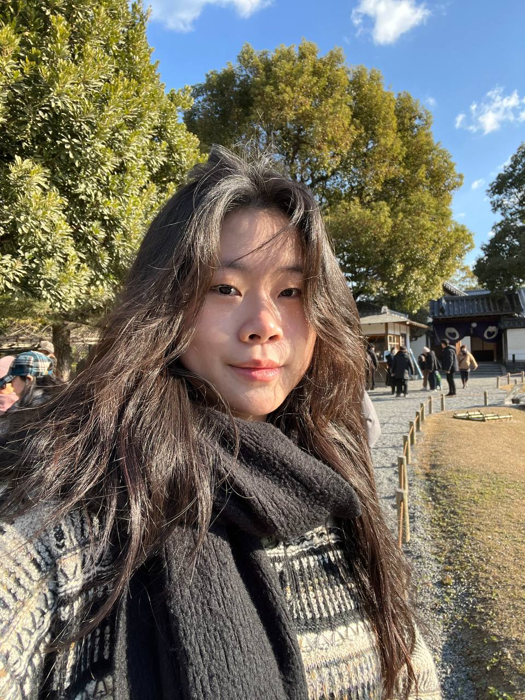
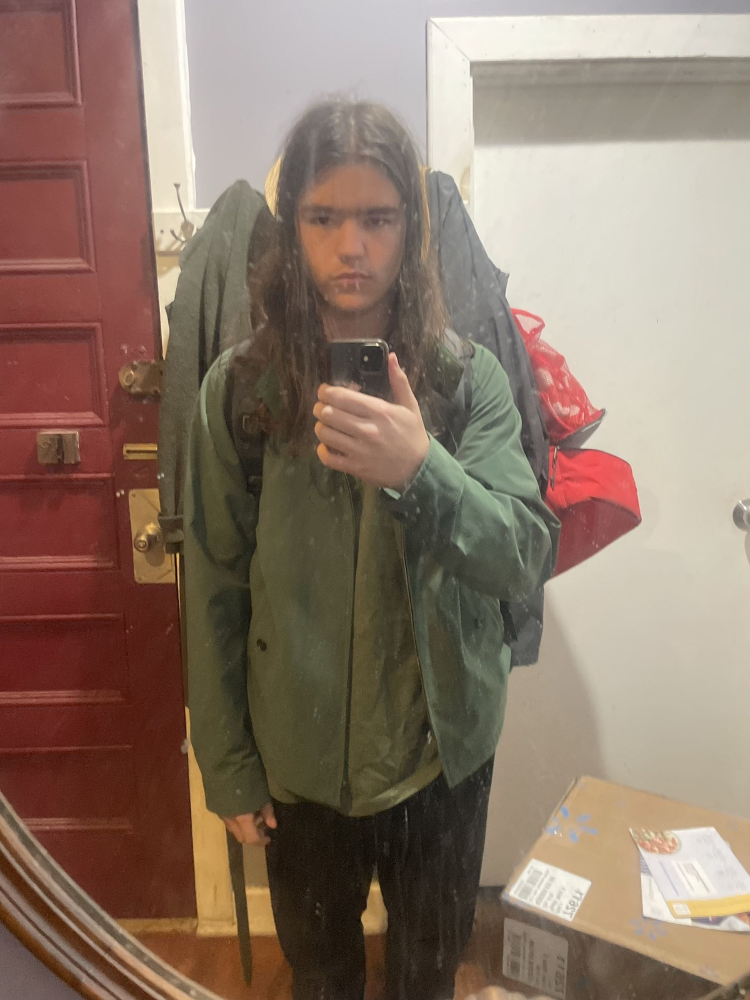

Meet the Team
Meet the students behind NeuroVision.

Gianna Guenther
Moderator

Asadul Kadir
Co-Moderator

Sara Nur
Co-Moderator

Jasmin Justine
Graphics Project Lead

Timothy Milchevskiy
Website Project Lead

Helen Kinful Ebens
Protocol Observer

Jessica Chawla
Secretary/Research Projet Lead

Tasha Eksam
Treasurer
Philipp Rachkovskiy
Website Project Coder

Shu Liu
Research Analyst

Julien Therrien
Website Project Coder
Ishraq Srejan
Research Analyst